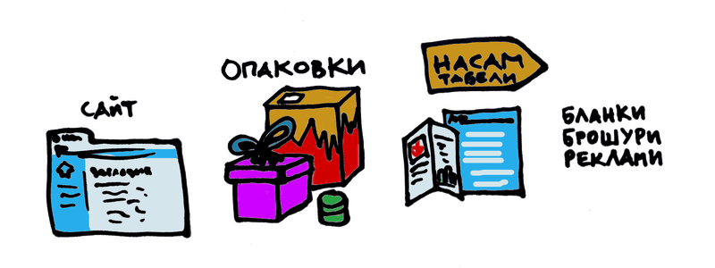

БРАНДИНГ
Сайт, опаковки и други материали
След като вече имате представа за вида и усещането на бранда си, е време да го приложите.
Важно е гордостта от занаята или продукта да пропие в работата ви. Ако имате съмнения, пропуски или нерешителност, те ще проличат и може да намали доверието на потенциалните ви клиетни.
Уебсайт
В днешно време, първото място, където публиката се сблъсква с бранда ви е вашият уебсайт.
За да си имате късче от интернет пространството, не е нужно да разполагате с много съдържание или да правите нещо сложно.
Необходими са ви само четири страници:
- начална страница с лого, картинка и най- обща информация;
- продукти/ услуги (работете с мен);
- за нас/ относно, където да представите себе си и работата си;
- контакти за запитвания, адрес и телефон.
А може и да съберете цялата тази информация на едно място.
Все пак ми се ще тук да отбележа една заблуда. Ако нямате блог, да намерят сайта ви чрез просто търсене в Google, е малко вероятно; а и тогава отнема време.
За да стигнат до уебсайта ви, хората най- вероятно ще научат адреса от самите вас, близки или познати, които са ползвали услугите или от директории (портали или каталози), където сте добавили бизнеса си.
Последният ви вариант е да пишете и да намерят статия по темата, която ги интересува, с която вие се занимавате, но за да се появи на първите места в Google отнема доста време.
А сега да видим какво точно трябва да напишете.
Най- важно, обяснете много ясно с какво се занимавате: какво правите и за кого е предназначено. Не се поддавайте на изкушението да сложите остроумен слоган. Не говорете смътно и неясно за дейността си. Например, не предлагате бизнес комуникация, а изработване на красиви и добре проучени презентации.
Не крийте какви са офертите ви, защото дори и да не стане веднага, ще искате по- нататък да го обмислят. Ограничете се до три варианта, за да не се парализират от избора бъдещите ви клиенти. Сложете филтри, ако имате електронен магазин. Сложете описателни имена, ако предлагате услуги.
Проверете дали на навигационната лента има всичко необходимо или дали не е претрупана или объркваща. Опитайте се доколкото е възможно да запазите стандартните менюта и бутони, за да не объркате посетителите. Ако навигацията отговаря на мисловния им модел, ще скролват и цъкат интуитивно.
Може да бъдете оригинални в изображенията, текста и донякъде типографията.
Освен това, ако трябва да сложите формуляр, по възможност искайте само необходимата ви информация. Да попълват поверителни данни прави хората неспокойни.
Какво виждат първо посетителите? Помислете какво може да търси някой на вашия сайт според различните нужди. Направете тест: присвийте очи, за да определите кои са най- отличаващите се части на страницата. Съвпадат ли с тези, към които вие искате да са привлечени.
Включени ли са всички ключови думи, които могат да търсят потенциалните ви клиенти.
За да ги придвижите по маркетинговата фуния, ще искате да ги прехвърлите на своя територия- тоест по имейл. Но никой не иска да се абонира за бюлетин по принцип: в замяна на имейл адреса може да предложите ексклузивни оферти, отстъпки, куиз, или пък чеклист.
Опаковки
Рядко мислим за опаковките или колетите, ако пращаме по пощата, като носител на бранда.
Но те играят важна роля! Спомнете си последния път, когато е пристигнал продукт, който сте поръчали онлайн и още преди да сте го отворили нямате търпение, защото изглежда елегантно или симпатично. Главната задача на брандирането е да създаде връзка между марката и всякакви положителни чувства.
Друга задача на опаковката е да изпъква, да привлича вниманието на идеалния ви клиент. Различните хора са привлечени към различна естетика: мъжете знаят, че черните и дървени ъгловати неща са предназначени за тях (спомнете си Danone for men), дамските неща пък обикновено са розови и по- заоблени, младите нямат против по- шарените и завъртяни неща, а бизнесът взема неща в неутрални цветове поради предпазливост.
Освен изгледа, вземете предвид формата и дали е удобно за ползване и за носене, особено ако е нещо по- тежко и подвижно (шампоан и майонеза с шише наобратно например).
Друго съображение се явява дали се представя правилно съдържанието- например препарат за пране да не прилича на безалкохолно, за да не се заблудят децата, или пък био храните да не са в червени опаковки, за да си личи, че са био.
Вземете предвид също, че ако имате повече продукти в серията е подходящо да има някакъв обединяващ елемент между тях, било то цвят, шрифт или вид линия. Това ви спестява усилия, а улеснява купувачите.
Освен за външния вид и функционалността, помислете къде ще продавате: в магазина или онлайн.
Ако ще продавате на място, може да се договорите как да изглежда на рафта: дали да са наредени множество бройки или да се представи и подчертае, а моделите да са отзад в склада (като в луксозен бутик или салон); дали да е на нивото на очите, по- горе за по- скъпи продукти или по- долу за продукти за деца; дали да се комбинират с този или онзи клас продукти (примерно Kinder Pingui е десерт, но е при млечните продукти) и така нататък. С тези и подобни въпроси се занимава още мърчандайзинга.
Ако ще доставяте след поръчка по интернет, трябва да проверите достатъчно здрави ли са опаковките ви, за да оцелеят пътуването, и дали трябва фолио с балончета (за пукане), ламиниране или застраховка. Може към стандартни кутии да добавите етикети и стикери за намален риск. Ако поръчката е по- лична като бельо, лекарства или дори подарък, помислете как кутията да не издава какво има вътре.
Преди да поръчате на фабрика, издателство или друг производител повече бройки, искайте мостри, за да сте сигурни, че изглеждат така, както си ги представяте.
Тъй като поръчки на едро може да струват по- малко, помислете дали си заслужава риска, къде ще ги складирате и как ще ги окомплектовате.
Заобиколени от етикети, тиксо, кутии и кашони, когато слагате всичко заедно, може да ви се стори задушавашо и прекалено. Искайте помощ и не пестете допълнителни усилия. Всяка грижа, която положите като поздрав с подпис, картичка или дори бонбонче, колкото и малко, може да даде впечатление, че отсреща, тоест вие като изпращач, сте внимателен, солиден и отзивчив човек.
Среда
Магазините и офис сградите като форма на организация и съответно на комуникация също могат да играят роля в брандинга ви. Като се започне от табелите, които посочват къде се намирате, като се мине през локацията (трафик и транспорт), които може да подсказват кого искате да привлечете например с квартала и витрината, и разбира се интериора, който включва подредбата на рафтовете (натъпкани или като на изложение), картините, които висят на стените, разположението на касата и куп наглед незначителни детайли, които обаче може да променят усещането, което клиентите имат за вас.
Канцеларски материали
Тежест придава и върху канцеларските материали като бланки, брошури и други рекламни материали. Тъй като те се ползват и от малки бизнеси, обикновено този, който ги избработва не е специалист. Ако са добре направени, това е само точка във ваша полза.
Дрехите и нрава
Впечатление правят и поведението и вида на представителите ви. Сигурно сте забелязали, че в някои магазини винаги са любезни, а другаде- все намусени, неприветливи и неуслужливи. Това зависи не само от политиките на наемане, но и от инструктажите и културата на компанията. Мениджърите задават този тон. Служителите ви са посланици на бранда ви.
Внимателно обмислете както униформите, таки и процедурите.
А като говорим за дрехи, бриндинг се прилага също към тениските, които раздавате, както и другите сувернири като химикалки, ключодържатели и прочие.
Да не говорим как се обличате при среща с нов клиент, при презентация или просто ежедневно.
Или по какъв начин създавате гордост и сполотеност за екипа: чрез комуникация, дисциплина и взаимно уважение разбира се, но също чрез отличителни знаци и шеги, които само някой, работел за компанията ви схваща.